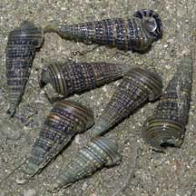
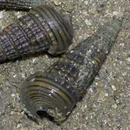
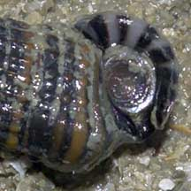

|
|
| shelled snails text index | photo index |
| Phylum Mollusca > Class Gastropoda > Family Potamididae |
| Girdled
horn snail Cerithidea cingulata Family Potamididae updated Sep 2020 Where seen? This small snail is sometimes seen in large numbers in shallow sheltered places and monsoon drains near the sea, also on mangrove mudflats. Features: 2-3cm. Shell conical with spirals of large beads. Shell opening large and flared with a spout-like tip. Operculum thin, dark with tight spirals. Sometimes confused with Bazillion snails which does not have flared shell opening and spout-like tip. |
|
 Kusu Island, May 07 |
 |
 Flared shell opening with spout-like tip. |
| What does it eat? It grazes on
tiny things growing or settling on the muddy bottom, such as diatoms,
bacteria and detritus. Human uses: Extensively collected for food and the shell used to make lime in the Philippines. |
| Girdled horn snails on Singapore shores |
On wildsingapore
flickr
|
|
Links
References
|